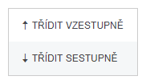
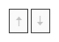

Třídění dat
Třídění dat ve sloupci se provádí sestupně či vzestupně a to vždy v případě, že chce uživatel setřídit data např. dle datumu, abecedy či jiného parametru. Třídění je možné provádět nad libovolnými sloupci, takže je třeba možné si setřídit spisy, které nemají validovanou GPS adresu.
Šipka  nahoru či dolu znamená třídění dat sestupně či vzestupně. Uživatel může toto třídění využít nad každým sloupcem seznamu.
Třídění je možné zapnou pomocí menu z nabídek (kliknutím pravým tlačítkem myši na název sloupce), nebo kliknutím levým tlačítkem myši na nadpis sloupce. Opakovaným kliknutím se sloupec dostává do stavu TŘÍDĚNO VZESTUPNĚ / SESTUPNĚ / NETŘÍDĚNO.
Tímto způsobem lze vypnout třídění ručně nad každým sloupcem. Nastavení lze zrušit i hromadně pomocí ikony Zrušení nastavení.